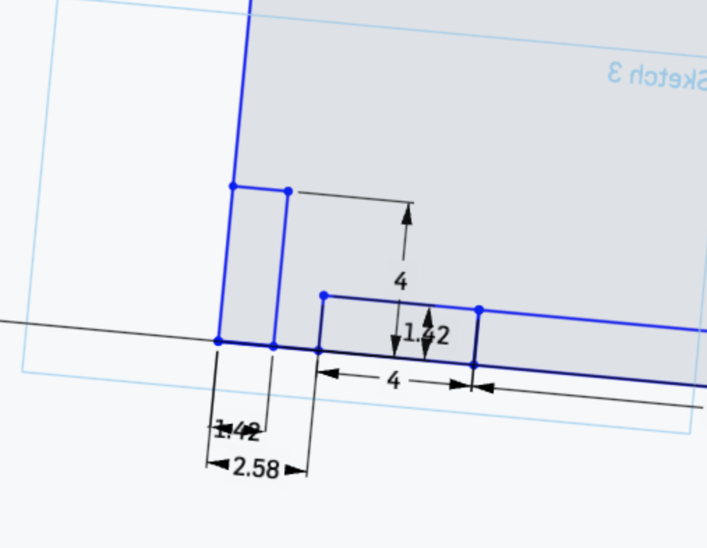

Assignment 5
Milling Box!
Tools: Onshape, caliper
Process
To begin this assignment, I started looking at the different milling joints from lecture and online. The FR1 is much thinner than the examples I see so I thought that I'll start with a basic square joints.
I started sketching it out in Onshape. I started with making rectangles that are within the dimensions of my FR1. Using the caliper, I measured the thickness of the FR1 that I used to make the joints and also used for extruding so I can model the fit of the different sides together.
The first side that I worked on was the bottom. At this point, I wasn't too sure how the pieces would look like but I started with the bottom and built more on that. I knew that I wanted to use square cuts and I want it to e big enough in thickness that the mill would be able to cut it. It was confusing thinking about the shapes of each side and how they fit together at once so I figured I would just start with one first and slow try the fit of each side.
I had a lot of trouble in the beginning making the cuts even on all sides. I used transform at first but then it was hard to align them when the sides are not equal so I ended up using transform one side to make sure the cuts are equally spread out and drew the lines manually on the other sides.

After finishing the bottom piece, I started with one of the side pieces. I used the bottom piece as the guide for the side pieces because I know what to cut to make it fit in the joint. After I complete one of the sides, I put the pieces in assembly to test for fit using Fasten. I am still learning how to use Fasten correctly so at times I just had to move the pieces manually to see if the fit is right. This really helped me see parts where it was cut at the wrong length. Something weird about onshape is that sometimes when I changed the dimenions of one thing, it affects another thing that is subtle that I don't see until I try to assemble it at the end. The nice thing about building a box is that you just need to design 3 different sides since they are parallel.

So after I finished with one side piece, I worked on the other one. I think that this piece was the hardest to figure out because I had to account for the thickness of the other pieces. I had to subtract pieces that would already have been connected. Assembly really helped with this because I used it to see how much I should subtract since I could see where the overlap was.
While I was working on the side piece, I suddenly remembered about the shortcomings of milling and that it can't make sharp edges and my design is full of them. Obviously, the joints won't fit if the edge is not being cut so I did some research on dogbones and how to do them. The one way I thought was the easiest to do and applied to my many edges was just to have half a radius of the mill end extend out. I figured that I would use the 1/32" end so I made my dogbone with 1/32" diameter.
The fit is good! Time to go milling!
~Milling~
I exported the different surfaces in DXF and imported it into KiCAD. I just followed the instructions provided for settings and position. I plotted and imported the file into Bantam.
Inside of the Bantam, I had these red corners which were my dogbones. I asked the staff and they said it should be ok but just in case, i redid the file to make my dogbones bigger. Even so, I still had the red errors. I proceeded to mill anyway because the dogbone would just be smaller than what I wanted but the edge would still fit.
When I started milling, I had a lot of problems with the material sliding. First it was sliding on the platform and then it was sliding between its sandwich formation. So I used A LOT of double sided tape and say a silent prayer every time I send it to the Othermill.
The first cut was not that great because there was a lot of debrief on the edges. Tyson told me that's because I forgot to set the Z to be the thickness of the FR1 so it was cutting through to the second board. It sounds like I got two for one cut but the edges didn't fit because the second board's cut was smaller.